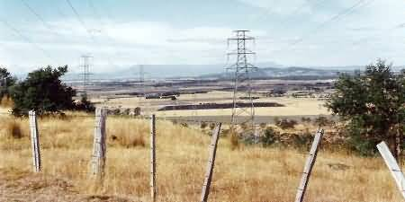
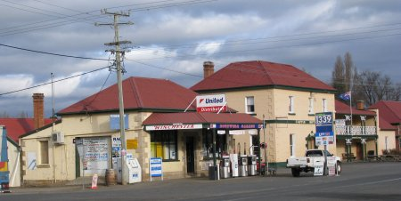
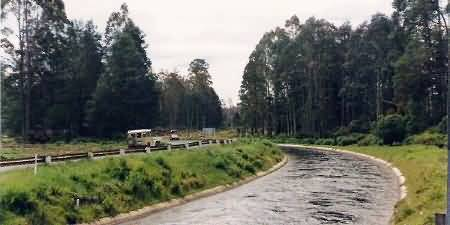
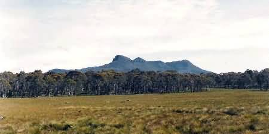
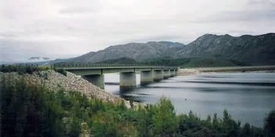

NAVIGATION
TOP of Page
MAIN Page
HOME Page
PREV Page
NEXT Page
HIGHLANDS
Perth to Bothwell
Bothwell to St Clair
St Clair to Queenstown
TASMANIAN TOUR
North West
Central North
North East
East Coast
South East
South West
Highlands
West Coast
North Coast
|
From Perth to Bothwell
The distance is approx 110km over the Midland highway and a steep but tarred section
of the Lake highway. Perth, population 1,500, was a convict station started
as a river crossing. It features many small 19th century houses. The Methodist Church
(1838) has regular services while the Baptist Church has an Indian influence in its
architecture. The Queens Head (1842) served Prince Alfred in 1868. Gibbet
Hill operated until 1837.
Turn off the Midland highway southwest towards Longford. Longford, population
1,800, on the Lake and South Esk rivers, hosts the Tasmanian Folk Festival in
January. Old buildings and mansions date from 1824. Woolmers (1843) is the
least altered of the historic homes, and Panshanger is a fine Neo-Classical
villa. Cressy, population 400, was established in the 1820's as a wheat growing
region on the Norfolk Plains.
Water from the nearby Poatina Power Station helps irrigate local farms to produce
vegetables, cereals and superfine wool. The Cressy Company, with its 8,000 ha
pastoral lease, had its workers served by the Holy Trinity Church and the
Cressy Hotel (1845). Take the turnoff to Poatina. Poatina, population 250,
at the base of the Western Tiers, is the construction town for the Palmerston Power
Station. The lookout has views to Launceston and Ben Lomond.

Countryside as seen from Poatina
Great Lake (22km long, 1,036m above sea level) on The Steppes district,
is Tasmania's highest fresh water lake. It is supposedly infested with trout. Proceed
down the road to the Lake highway and turn right to head west towards Miena. Miena
is a Trout fishing utopia on the southern end of Great Lake. Remember to bring bait as
my father found it impossible to buy locally, and ended up digging for worms in a local
paddock, again without success.
Swan Bay is at the Bronte turnoff. The Compleat Angler Hotel serves trout
meals in a room with an open fire. Return Southeast back along the Lake highway towards
Bothwell. The west side of Great Lake has rough roads and the scenery isn't worthwhile
viewing.
TOP
MAIN
HOME
PREV
NEXT
From Bothwell to Lake St Clair
The distance is approx 185km over the Lake and Lyell highways. Bothwell,
population 500, on the Clyde river, was settled by Scots who created Australia's
premier golf course (1820) and the first Presbyterian church, St Lukes (1831),
with its carved heads over the doorway. The town has wide roads to accomodate
envisioned growth. The Castle Hotel serves roasts, venison and trout on Sundays.
Crown Lodge (1836) has colonial accommodation and Devonshire teas. Ratho
housed Alexander Reid, town founder and golf enthusiast.

Bothwell General Store and the Castle Hotel in Bothwell
Cluny (1830) was built on a 1824 land grant. Turn right to travel south to
Hamilton. Hamilton, population 250, is known for its substantial stone buildings
and nearby Meadowbank Lake. Martin Cash had a shootout with police at nearby
Gretna. Head west along the Lyell highway.
TOP
MAIN
HOME
PREV
NEXT
Ouse, is a small village with St John the Baptist church, and the Church Of Immaculate
Conception on separate hills. Lawrenny homestead features Italian marblework. Australias
first playwright David Burn lived at Rotherwood. Stock up on food now for travel to
Queenstown. The Central Plateau is a pleasant but cold region of riverlets, lakes and
buttongrass plains. Look out for the field of red flowers.
Tarraleah is a Hydeo Electric Commission (HEC) town housing the staff for the
Tarraleah and Tungatinah power schemes. Beside the road an extremely fast
open air water race supplies the Tarraleah power station. Detour into town to park and
look across the scenic valley. The highway exits across the dam wall to a beautiful picnic
ground. Descend the steep riverbank to a good fishing spot.

Tarraleah Water Race - the water feeds the Power Station
London Lakes private trout fishing lodge is down a 13 km track at the turn right
from Bronte Lagoon. Costs are from $250 per day. Bronte Lake, a former
Hydro camp, is now a holiday resort for eleven nearby trout stocked lakes. Derwent
Bridge has a spectacular spray beside the road when the huge sluice gate opens.
Derwent Bridge Hotel is a welcome stop with its accomodation, reasonably priced
trout and venison meals plus open fires.
TOP
MAIN
HOME
PREV
NEXT
From Lake St Clair to Queenstown
The distance is 80km over the Lyell highway. The scenery is mountainous with
sub-temperate rainforest from 250cm annual rainfall. Look for snow on the peaks,
even in summer. Lake St Clair National Park has an entry fee worth paying
if you want to tramp the Watersmeet Nature Trail, an interesting 40 minute
tour around the lake through eucalypt forest and buttongrass plains. Feed the
inquisitive little Pademelons in the picnic ground with food bought from the kiosk
at Cynthia Bay. Lake St Clair is 17.5km long and 200m deep. During summer
a small ferry plies the lake.

Scenery on the Mt Lyell Highway
Head back to the highway and turn right, heading west towards Queenstown. Franklin
- Lower Gordon Wild Rivers National Park is a World Heritage area, opened up in
1932 by the highway. King William Saddle has views southwest across to the rock
outcrop of Frenchmans Cap and South to the King William Range.
Surprise Valley is a forested glacial valley past Mt Arrowsmith (981m).
TOP
MAIN
HOME
PREV
NEXT
Across the Franklin river is the picnic area with its displays of conservation and
aboriginal habitation during the last Ice Age 15,000 years ago. Forest walking tracks
to Frenchmans Cap are found 3km later; try the short distance to the flying fox across
the river. Collingwood River is the starting point for Franklin River
rafters. Another rainforest walk for five minutes will take you to a pebble beach on
the confluence of the Collingwood and Alma rivers.
Victoria Pass is the exit of the national park. Four km later is a 40 minute
return walk to Nelson Falls (35m). Lake Burbury (24km long, 235m deep)
is a HEC dam that now floods the King River valley, drowning part of the scenic
Mt Jukes road to Queenstown. Below the waters are the roadbed of The North
Mt Lyell Railway, including the site of Crotty plus the 2 foot gauge rail
bridge between Crotty and Linda. Before the flooding, I travelled the old road and
took some wonderful photographs. Drive across the long Bradshaws Bridge into
the north west coastal region.

Bradshaws Bridge at the entrance to the West Coast
TOP
MAIN
HOME
PREV
NEXT
|